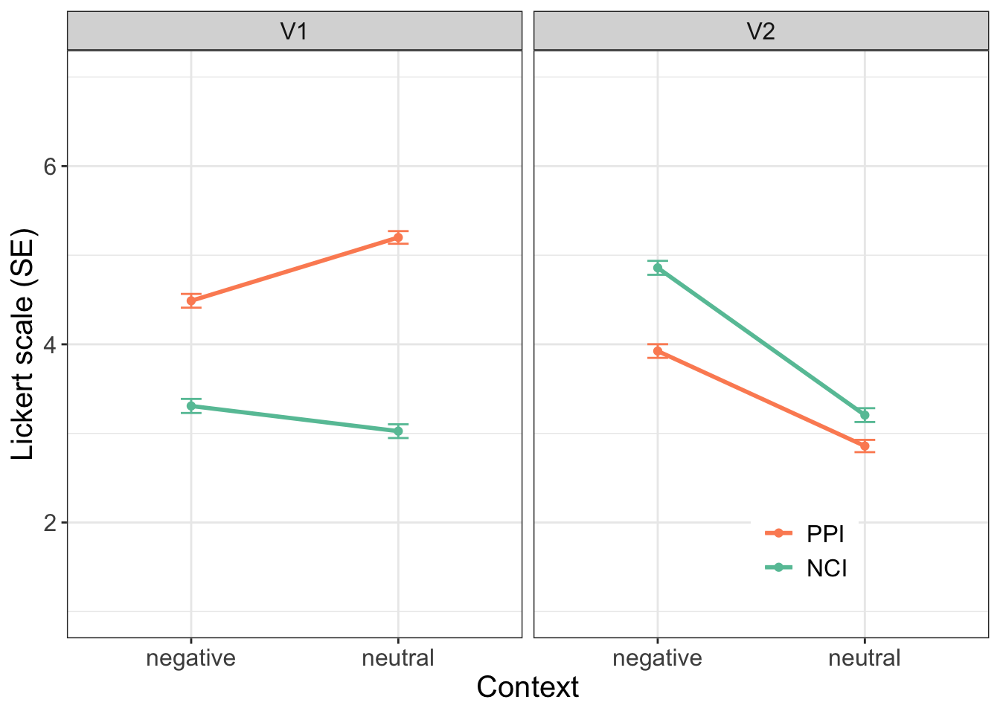
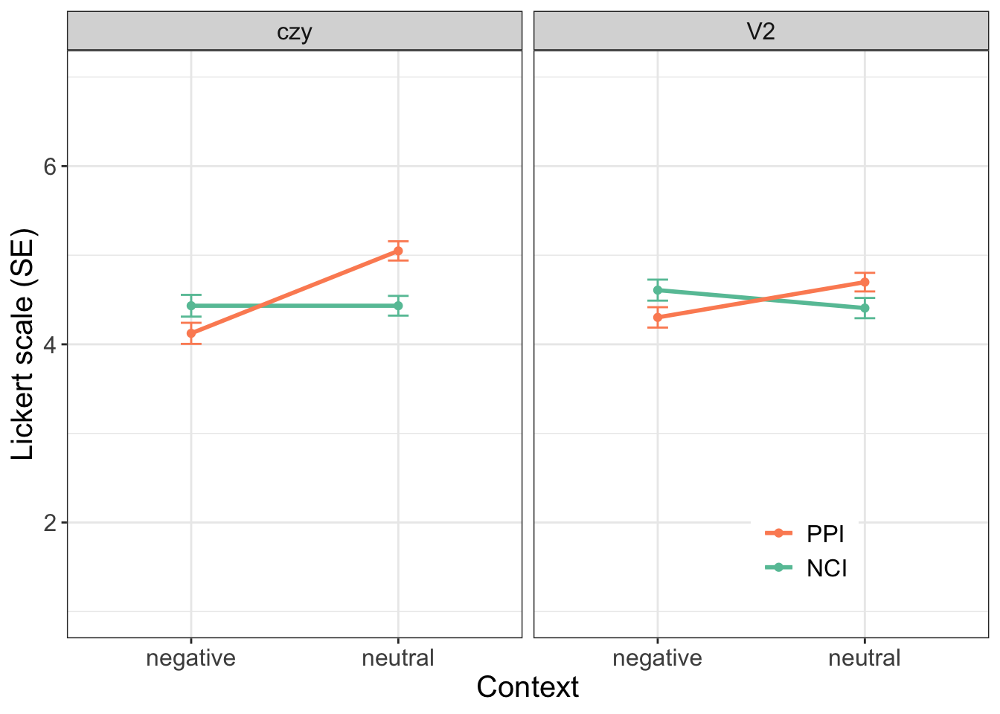
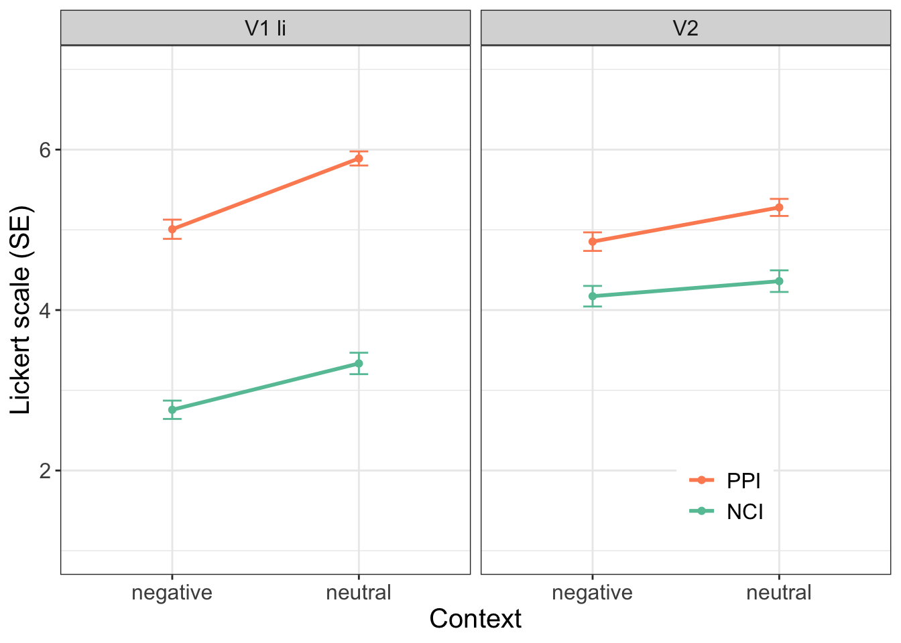

library(tidyverse) # THE package, it contains ggplot2, tidyr, dplyr, readr and more
library(formattable) # for pretty markdown tables Cz, Pol, Ru descriptive stat in one
Loading languages
setwd("/Users/maria.onoeva/Desktop/new_folder/GitHub/stat-repo/freq")
library(readr)
ru <- read_delim("data/queslav_neg_mo_RESULTS_2023-03-06-0953_noaband.csv", ";",
escape_double = FALSE,
trim_ws = TRUE,
show_col_types = FALSE)
cz <- read_delim("data/czequebi_RESULTS_2025-05-13-1548.csv", ";",
escape_double = FALSE,
trim_ws = TRUE,
show_col_types = FALSE)
pol <- read_delim("data/no_abandoned_QueSlav_PL_RESULTS_2024-03-21-1341.csv", ";",
escape_double = FALSE,
trim_ws = TRUE,
show_col_types = FALSE)Removing trial from all three
cz_df <- cz %>%
filter(is_test_trial == "no")
ru_df <- ru %>%
filter(is_test_trial == "no")
pol_df <- pol %>%
filter(is_test_trial == "no")Checking participants and how many items they completed
langs_participants <- bind_rows(
cz_df %>% count(participant, name = "items") %>% mutate(lang = "CZ"),
ru_df %>% count(participant, name = "items") %>% mutate(lang = "RU"),
pol_df %>% count(participant, name = "items") %>% mutate(lang = "POL")
)Cleaning unreliable
Now I need to remove all unreliable, I’ll do that as we did it in our studies.
Czech (from Anicka’s script)
#filtering unreliable participants (limit: 8 filler fillers correct) ----
#for F10 items 1-3: rating < 4
#for F10 items 4-10: rating > 4
cz_df_reliable <- cz_df %>%
group_by(participant)%>%
filter(participant != "9")%>%
filter(participant != "35")%>%
filter(participant != "51")%>%
filter(participant != "72")%>%
filter(participant != "127")%>%
filter(participant != "8")%>%
filter(participant != "40")%>%
filter(participant != "42")%>%
filter(participant != "86")%>%
filter(participant != "123")
cz_df_reliable %>%
ungroup() %>%
summarise(total_part = n_distinct(participant)) # 129 as per Anicka's thesis# A tibble: 1 × 1
total_part
<int>
1 129Polish (from Mishi’s script)
reliability <- subset(pol_df, pol_df$materials=="F5 - Reliability")
reliability$filler_answer <- 0
reliability$filler_answer <- as.numeric(reliability$filler_answer)
reliability$condition[reliability$item == "1"] <- 'bad'
reliability$condition[reliability$item == "2"] <- 'bad'
reliability$condition[reliability$item == "3"] <- 'bad'
reliability$condition[reliability$condition != "bad"] <- 'good'
reliability$filler_answer[which(grepl('bad', reliability$condition) &
grepl('[123]', reliability$rating1))] <- 1
reliability$filler_answer[which(grepl('good', reliability$condition) &
grepl('[567]', reliability$rating1))] <- 1
reliability_means <- reliability %>%
group_by(participant) %>%
dplyr::summarize(Mean = mean(filler_answer, na.rm=TRUE))
reliability_means <- subset(reliability_means, reliability_means$Mean >= 0.8)
reliability1 <- subset(reliability, reliability$participant %in% reliability_means$participant)
pl_accept1 <- subset(pol_df, pol_df$participant %in%
reliability1$participant)
pol_df_reliable <- pl_accept1
pol_df_reliable %>%
summarise(total_part = n_distinct(participant)) # 67 as per Mishi's thesis# A tibble: 1 × 1
total_part
<int>
1 67Russian
# creating a new df with the filler items only
fillers_only <- ru_df %>%
filter(materials == "f9_filler")
# creating a new column for checking if fillers are good or not
fillers_only$filler_answer <- 0
fillers_only$filler_answer <- as.numeric(fillers_only$filler_answer)
# rename filler items: the first three items were bad, the rest were good
fillers_only$condition[fillers_only$item %in% c("1", "2", "3")] <- 'bad'
fillers_only$condition[fillers_only$condition != "bad"] <- 'good'
# bad fillers
fillers_only$filler_answer[which(grepl('bad', fillers_only$condition) &
grepl('1|2|3', fillers_only$rating1))] <- 1
# good fillers
fillers_only$filler_answer[which(grepl('good', fillers_only$condition) &
grepl('5|6|7', fillers_only$rating1))] <- 1
filler_results <- fillers_only %>%
group_by(participant) %>%
summarize(Mean = mean(filler_answer, na.rm=TRUE))
filler_results# A tibble: 95 × 2
participant Mean
<dbl> <dbl>
1 1 1
2 2 0.9
3 3 0.8
4 4 0.6
5 5 0.6
6 6 0.6
7 7 0.9
8 8 0.7
9 9 0.9
10 10 0.9
# ℹ 85 more rows# how in general the participants went through fillers
mean(filler_results$Mean)[1] 0.844unreliable_participants <- filler_results %>%
filter(Mean < 0.8) # I have 27 unreliable participants
fillers_only_reliable <- anti_join(filler_results, unreliable_participants,
by = "participant")
# testing by applying mean to the reliable df
mean(fillers_only_reliable$Mean)[1] 0.924ru_df_reliable <- anti_join(ru_df, unreliable_participants,
by = "participant")
ru_df_reliable %>%
distinct(participant) %>%
summarize(total_part = n()) # 68 as per my results# A tibble: 1 × 1
total_part
<int>
1 68Descriptive for all langs
Exporting E1 from each
cz_df_e1 <- cz_df_reliable %>%
filter(materials == "qb_E1_main")
pol_df_e1 <- pol_df_reliable %>%
filter(materials == "E1")
ru_df_e1 <- ru_df_reliable %>%
filter(materials == "e1_main")
bind_rows( # how many items each participant made for sanity check
cz_df_e1 %>% count(participant, name = "items") %>% mutate(lang = "CZ"),
pol_df_e1 %>% count(participant, name = "items") %>% mutate(lang = "POL"),
ru_df_e1 %>% count(participant, name = "items") %>% mutate(lang = "RU") )# A tibble: 264 × 3
# Groups: participant [137]
participant items lang
<dbl> <int> <chr>
1 1 32 CZ
2 2 32 CZ
3 3 32 CZ
4 4 32 CZ
5 5 32 CZ
6 6 32 CZ
7 7 32 CZ
8 10 32 CZ
9 11 32 CZ
10 12 32 CZ
# ℹ 254 more rowsQ: Should I address the fact that we have much more input from Cz?
bind_rows(
cz_df_e1 %>% group_by(condition) %>% summarise(count=n()) %>% mutate(lang="CZ")
%>% pivot_wider(names_from = condition, values_from = count, values_fill = 0),
pol_df_e1 %>% group_by(condition) %>% summarise(count=n()) %>% mutate(lang="POL")
%>% pivot_wider(names_from = condition, values_from = count, values_fill = 0),
ru_df_e1 %>% group_by(condition) %>% summarise(count=n()) %>% mutate(lang="RU")
%>% pivot_wider(names_from = condition, values_from = count, values_fill = 0)
)# A tibble: 3 × 9
lang a b c d e f g h
<chr> <int> <int> <int> <int> <int> <int> <int> <int>
1 CZ 516 516 516 516 516 516 516 516
2 POL 268 268 268 268 268 268 268 268
3 RU 272 272 272 272 272 272 272 272Ru conditions
# creating a new column for the first variable 'verb' and recoding
# to the readable form 4 conditions were V1 li, 4 -- V2
ru_df_e1$verb <- 0
ru_df_e1$verb[ru_df_e1$condition %in% c("a", "c", "e", "g")] <- "V1 li"
ru_df_e1$verb[ru_df_e1$verb != "V1 li"] <- "V2"
# the same as above for the second variable 'context'
ru_df_e1$context <- 0
ru_df_e1$context[ru_df_e1$condition %in% c("a", "b", "c", "d")] <- "neutral"
ru_df_e1$context[ru_df_e1$context != "neutral"] <- "negative"
# the same as above for the third variable 'indefinite'
ru_df_e1$indef <- 0
ru_df_e1$indef[ru_df_e1$condition %in% c("a", "b", "e", "f")] <- "NCI"
ru_df_e1$indef[ru_df_e1$indef != "NCI"] <- "PPI"Cz conditions
# creating a new column for the first variable 'verb' and recoding
# to the readable form 4 conditions were V1 li, 4 -- V2
cz_df_e1$verb <- 0
cz_df_e1$verb[cz_df_e1$condition %in% c("a", "b", "c", "d")] <- "V1"
cz_df_e1$verb[cz_df_e1$verb != "V1"] <- "V2"
# the same as above for the second variable 'context'
cz_df_e1$context <- 0
cz_df_e1$context[cz_df_e1$condition %in% c("b", "d", "f", "h")] <- "neutral"
cz_df_e1$context[cz_df_e1$context != "neutral"] <- "negative"
# the same as above for the third variable 'indefinite'
cz_df_e1$indef <- 0
cz_df_e1$indef[cz_df_e1$condition %in% c("a", "b", "e", "f")] <- "NCI"
cz_df_e1$indef[cz_df_e1$indef != "NCI"] <- "PPI"Pol conditions
# creating a new column for the first variable 'verb' and recoding
# to the readable form 4 conditions were V1 li, 4 -- V2
pol_df_e1$verb <- 0
pol_df_e1$verb[pol_df_e1$condition %in% c("a", "b", "e", "f")] <- "czy"
pol_df_e1$verb[pol_df_e1$verb != "czy"] <- "V2"
# the same as above for the second variable 'context'
pol_df_e1$context <- 0
pol_df_e1$context[pol_df_e1$condition %in% c("a", "b", "c", "d")] <- "negative"
pol_df_e1$context[pol_df_e1$context != "negative"] <- "neutral"
# the same as above for the third variable 'indefinite'
pol_df_e1$indef <- 0
pol_df_e1$indef[pol_df_e1$condition %in% c("a", "c", "e", "g")] <- "NCI"
pol_df_e1$indef[pol_df_e1$indef != "NCI"] <- "PPI"cz_raw_summary <- cz_df_e1 %>%
dplyr::group_by(condition, context, verb, indef) %>%
dplyr::summarize(Median = median(rating1),
Mean = mean(rating1),
SD = sd(rating1), # sd = sqrt(var(rating1))
)
cz_raw_summary <- cz_raw_summary %>%
mutate(strategy = if_else(verb != "V2", "overt", "SVO"))
cz_raw_summary# A tibble: 8 × 8
# Groups: condition, context, verb [8]
condition context verb indef Median Mean SD strategy
<chr> <chr> <chr> <chr> <dbl> <dbl> <dbl> <chr>
1 a negative V1 NCI 3 3.31 1.80 overt
2 b neutral V1 NCI 3 3.03 1.75 overt
3 c negative V1 PPI 5 4.49 1.76 overt
4 d neutral V1 PPI 6 5.20 1.61 overt
5 e negative V2 NCI 5 4.86 1.78 SVO
6 f neutral V2 NCI 3 3.21 1.76 SVO
7 g negative V2 PPI 4 3.92 1.74 SVO
8 h neutral V2 PPI 3 2.86 1.57 SVO pol_raw_summary <- pol_df_e1 %>%
dplyr::group_by(condition, context, verb, indef) %>%
dplyr::summarize(Median = median(rating1),
Mean = mean(rating1),
SD = sd(rating1), # sd = sqrt(var(rating1))
)
pol_raw_summary <- pol_raw_summary %>%
mutate(strategy = if_else(verb != "V2", "overt", "SVO"))
pol_raw_summary# A tibble: 8 × 8
# Groups: condition, context, verb [8]
condition context verb indef Median Mean SD strategy
<chr> <chr> <chr> <chr> <dbl> <dbl> <dbl> <chr>
1 a negative czy NCI 5 4.43 2.00 overt
2 b negative czy PPI 5 4.12 1.94 overt
3 c negative V2 NCI 5 4.61 1.93 SVO
4 d negative V2 PPI 5 4.30 1.87 SVO
5 e neutral czy NCI 5 4.43 1.81 overt
6 f neutral czy PPI 6 5.05 1.77 overt
7 g neutral V2 NCI 5 4.41 1.86 SVO
8 h neutral V2 PPI 5 4.70 1.71 SVO ru_raw_summary <- ru_df_e1 %>%
dplyr::group_by(condition, context, verb, indef) %>%
dplyr::summarize(Median = median(rating1),
Mean = mean(rating1),
SD = sd(rating1), # sd = sqrt(var(rating1))
)
ru_raw_summary <- ru_raw_summary %>%
mutate(strategy = if_else(verb != "V2", "overt", "SVO"))
ru_raw_summary# A tibble: 8 × 8
# Groups: condition, context, verb [8]
condition context verb indef Median Mean SD strategy
<chr> <chr> <chr> <chr> <dbl> <dbl> <dbl> <chr>
1 a neutral V1 li NCI 3 3.33 2.20 overt
2 b neutral V2 NCI 5 4.36 2.22 SVO
3 c neutral V1 li PPI 6 5.89 1.45 overt
4 d neutral V2 PPI 6 5.28 1.75 SVO
5 e negative V1 li NCI 2 2.76 1.89 overt
6 f negative V2 NCI 4 4.17 2.12 SVO
7 g negative V1 li PPI 6 5.01 1.98 overt
8 h negative V2 PPI 5 4.85 1.91 SVO Interaction plots
Czech
# This code is based on Radek Šimík's code.
library(Rmisc) # for summarySE, needed just here
# I load the df to inter_df
cz_inter_df <- cz_df_e1
# changing rating1 to numeric
cz_inter_df$rating1 <- as.numeric(cz_inter_df$rating1)
# calculating interactions
cz_tab_inter <- summarySE(cz_inter_df, measurevar="rating1",
groupvars = c("context", "verb", "indef"))
# plotting
cz_plot <- ggplot(cz_tab_inter, aes(x=context, y=rating1,
colour=indef, group=indef)) +
geom_errorbar(aes(ymin=rating1-se, ymax=rating1+se), width=.1) +
facet_wrap(~verb) +
theme_bw() +
geom_line(size = 1) +
theme(
text = element_text(size = 15),
# legend.text = element_text(size=30),
# legend.key.size = unit(1, 'cm'),
legend.position = c(0.8, 0.15),
legend.title=element_blank())+
# axis.text = element_text(size = 25),
# axis.title = element_text(size = 25),
# axis.title.y = element_text(margin = margin(t = 0, r = 20, b = 0, l = 0)),
# axis.title.x = element_text(margin = margin(t = 20, r = 0, b = 0, l = 0))) +
geom_point() +
xlab("Context") +
ylab("Lickert scale (SE)") +
coord_cartesian(ylim = c(1, 7)) +
#scale_y_continuous(breaks = pretty_breaks(4)) +
guides(colour = guide_legend(reverse=TRUE)) +
scale_color_brewer(palette = "Set2")
cz_plot
Polish
# This code is based on Radek Šimík's code.
library(Rmisc) # for summarySE, needed just here
# I load the df to inter_df
pol_inter_df <- pol_df_e1
# changing rating1 to numeric
pol_inter_df$rating1 <- as.numeric(pol_inter_df$rating1)
# calculating interactions
pol_tab_inter <- summarySE(pol_inter_df, measurevar="rating1",
groupvars = c("context", "verb", "indef"))
# plotting
pol_plot <- ggplot(pol_tab_inter, aes(x=context, y=rating1,
colour=indef, group=indef)) +
geom_errorbar(aes(ymin=rating1-se, ymax=rating1+se), width=.1) +
facet_wrap(~verb) +
theme_bw() +
geom_line(size = 1) +
theme(
text = element_text(size = 15),
# legend.text = element_text(size=30),
# legend.key.size = unit(1, 'cm'),
legend.position = c(0.8, 0.15),
legend.title=element_blank())+
# axis.text = element_text(size = 25),
# axis.title = element_text(size = 25),
# axis.title.y = element_text(margin = margin(t = 0, r = 20, b = 0, l = 0)),
# axis.title.x = element_text(margin = margin(t = 20, r = 0, b = 0, l = 0))) +
geom_point() +
xlab("Context") +
ylab("Lickert scale (SE)") +
coord_cartesian(ylim = c(1, 7)) +
#scale_y_continuous(breaks = pretty_breaks(4)) +
guides(colour = guide_legend(reverse=TRUE)) +
scale_color_brewer(palette = "Set2")
pol_plot
Russian
# This code is based on Radek Šimík's code.
library(Rmisc) # for summarySE, needed just here
# I load the df to inter_df
ru_inter_df <- ru_df_e1
# changing rating1 to numeric
ru_inter_df$rating1 <- as.numeric(ru_inter_df$rating1)
# calculating interactions
ru_tab_inter <- summarySE(ru_inter_df, measurevar="rating1",
groupvars = c("context", "verb", "indef"))
# plotting
ru_plot <- ggplot(ru_tab_inter, aes(x=context, y=rating1,
colour=indef, group=indef)) +
geom_errorbar(aes(ymin=rating1-se, ymax=rating1+se), width=.1) +
facet_wrap(~verb) +
theme_bw() +
geom_line(size = 1) +
theme(
text = element_text(size = 15),
# legend.text = element_text(size=30),
# legend.key.size = unit(1, 'cm'),
legend.position = c(0.8, 0.15),
legend.title=element_blank())+
# axis.text = element_text(size = 25),
# axis.title = element_text(size = 25),
# axis.title.y = element_text(margin = margin(t = 0, r = 20, b = 0, l = 0)),
# axis.title.x = element_text(margin = margin(t = 20, r = 0, b = 0, l = 0))) +
geom_point() +
xlab("Context") +
ylab("Lickert scale (SE)") +
coord_cartesian(ylim = c(1, 7)) +
#scale_y_continuous(breaks = pretty_breaks(4)) +
guides(colour = guide_legend(reverse=TRUE)) +
scale_color_brewer(palette = "Set2")
ru_plot